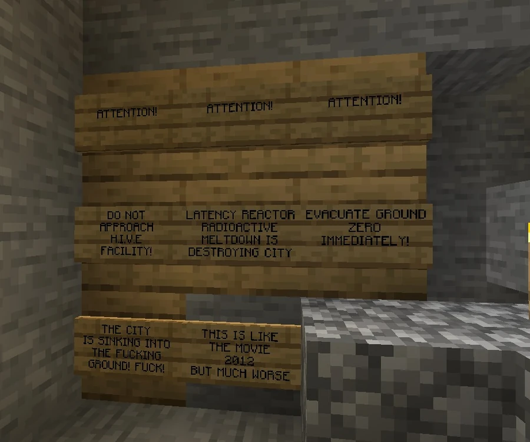

The sinking of Broville
The old city’s disaster, the reactor that survived, and the beginning of reconstruction.
The collapse of the old city
The sinking, also called the V10 Catastrophe, is the disaster that led to evacuation and the deterioration of much of old Broville’s infrastructure. It is a separate event from the Great Fire. Underground ruins and the rebuilding of downtown on the surface mark its place in the later city.
Notices at −174, 5, 1840 and −174, 5, 1841 refer to a radioactive meltdown and warn against approaching H.I.V.E.. In his first report, the Doctor describes the city sinking, residents trying to rebuild, and the machine surviving; he accepts responsibility and judges that the complex concentrated too much power in a confined space.



The reactor and the extent of the disaster
The Latency Reactor was housed in H.I.V.E. and was removed from the epicenter after the disaster. The community narrative expands the collapse into a failure of support structures, with the city sinking to the bedrock layer and opening immense geological fissures, attributing the episode to corporate negligence; the notices and report establish the collapse and the machine’s survival but do not detail this mechanism or fix the year.
The same narrative describes a widespread loss of societal control and associates the ruined area with biological and paranormal proliferation, alongside the physical destruction that forced downtown’s reconstruction.
Deaths, remains, and legends
Community accounts describe numerous deaths and interpret skulls piled in the basements of BroCORP Tower as an ossuary of victims. They also associate radiation and the ruined underground with mutations, creatures, and urban legends, including the Toilet Rat. This association offers an explanation for underground horrors without demonstrating the origin of each creature.
Reconstruction and organizations
The Doctor recounts moving research to the western forest, where SOLAR took shape. According to him, BroCORP Tower was erected over the ruins. The reactor’s survival connects the old complex to the later laboratory and the resumption of research.
H.I.V.E. stands at the center of the disaster accounts. LightSource is also named among the organizations associated with the episode in community tradition, but that mention does not establish what its involvement would have been.
Original documents
Read the in-world texts behind this article. Expand a title to read its full transcription; some texts reveal clues and endings.
Read original document — SOLAR Report [#1]The Doctor · 5 pages · Spoilers
Page 1
Page 2
Page 3
Page 4
Page 5
Book recorded at -2011 64 1742. Source: SPOILER_bookOutput.txt. Original spelling retained.
Read original inscription — Meltdown warningInscription · Spoilers
Inscription recorded at -174 5 1841. Source: SPOILER_signOutput.txt. Original spelling retained.
Read original inscription — H.I.V.E. evacuation warningInscription · Spoilers
Inscription recorded at -174 5 1840. Source: SPOILER_signOutput.txt. Original spelling retained.
See also
Sources and references
- v11.4.4 maps, signs, books and items World records
- V10 Catastrophe · Broville Wiki Community archive
Text adapted and expanded from V10 Catastrophe (contributors and history, revision 5012). Adapted text is available under CC BY-SA 3.0.